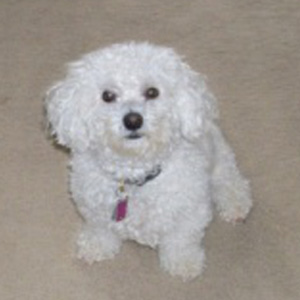

March 2013  My name is Maddie (O’Toole) and I am a Bichon Frise. I don’t know my actual age, but I think I am seven years old. I don’t remember the first four years of my life. All I remember is being rescued by an organization called Chesapeake Dogs and Cats. They put me in a foster home and posted my information on their website. Within a week, I was adopted by my mom. It took me a couple of weeks to bond with her even though she loved me unconditionally right away. Now we are thick as thieves. About 5 months ago, my mom got sick and I had to call Pampered Pets so I could get walked. That is how I met Alec. He started out as my walker and now he is my friend. I get so excited to see him. So if you need to be walked, I recommend Pampered Pets. I told Alec that I do not like big dogs, but little ones are great. My two friends are Cupcake and Coco they are Chihuahuas. If we see them while he is walking me, I drag him to see them. I love the cold weather, especially the snow. I stick my nose in it and sometimes I roll around in it. I bark at the squirrels and the birds at the bird feeder. It drives my mom crazy, but I cannot stop. It is what dogs are supposed to do, right! I really have a great life now and am grateful to have been rescued and if you need to be walked, called Pampered Pets. |